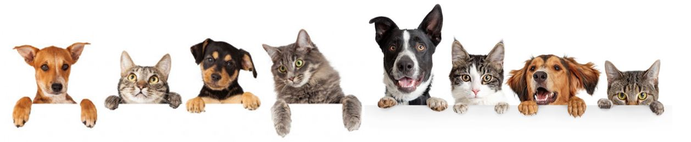

Las mascotas son consideradas las mas fieles y amigables, y ciertos estudios han demostrado que cuentan con emociones complejas que los hacen "casi" humanos, reaccionando ante diversos estimulos de forma similar a nosotros, en la expresion de felicidad y tristeza, principalmente los perros.
Asimismo, tambien los gatos han tenido reaccion diferente a la voz de sus "dueños", pero no se han acercado como los perros. La diferencia, segun estudios, es que los gatos nos ven como una especie igual a ellos, mientras que los perros reaccionan diferente con los humanos que con otros perros.
